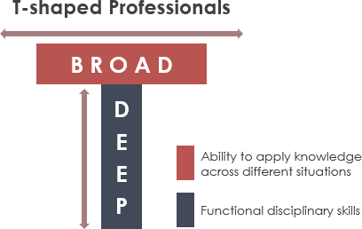
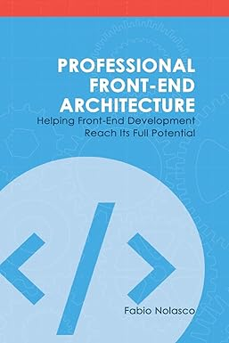

Modern Frontend Documentation
Welcome to the Modern Frontend Documentation! This guide covers best practices, project setup, architecture, and development techniques to build scalable and maintainable frontend applications.
Most professional fields have specialized branches growing off of their original trunk. Medicine has cardiology, dentistry has orthodontology, and so on. That tends to happen when the amount of information in a subject becomes too much for one person to know it all. At the same time, holistic views are obviously still necessary. But how can we find an adequate balance between depth and breadth of knowledge?
Quote
- tanstack.com
- What it is a T-Shaped developer (And why you should be one)
- Why Developers Should Be T-shaped People
- Are you a T-Shaped Developer?
- T-Shaped Developers: The Future of Software Development
- Understanding Scrum Development Teams: T-Shaped vs. I-Shaped

- Full-stack = speaks frontend + backend languages
- Polyglot frontend = speaks multiple frontend “dialects”
Why it matters for you
- Full-stack skills: Make you competitive for international companies and remote work. You’re not limited to frontend-only roles.
- Polyglot frontend skills: Makes you flexible and adaptable. Employers know you can pick up any frontend framework quickly.
What You Will Learn
- Setting up a modern frontend project
- Utilizing feature-based architecture
- Implementing micro frontends
- Handling state management
- Following code guidelines
- Optimizing performance
- Testing your application
- Deploying with CI/CD
Let's get started!
Shared Dependencies
The biggest problem with shared dependencies is that the parts of the software that use the shared code can diverge in their requirements.
When this happens, a developer’s reflex is to cater to different needs while using the same code. That means adding optional parameters, conditional logic to make sure that the shared code can serve two different requirements. This makes the actual code more complicated, eventually causing more problems than it solves. At some point, you start thinking about a more complicated design than copy-pasted code. (1)
- page: 66
Street Coder
A street coder is anyone with software development experience in the industry who has had their beliefs and theories shaped by the realities of an unreasonable boss who wanted a week’s worth of work done in the morning.
Great street coders
In addition to street cred, honor, and loyalty, a street coder ideally possesses these qualities:
- Questioning
- Results-driven (aka, “results-oriented” in HR-speak)
- High-throughput
- Embracing complexity and ambiguity
Great software developers are not just great coders
Being a great work colleague involves many more skills than just putting bits and bytes into a computer. You need to be good at communication, provide constructive feedback, and accept criticism like a champion. Even Linus Torvaldsa admitted that he needed to work on his communication skills. However, such skills are outside the scope of this book. You will have to make friends.
Enum
Enums are great for holding discrete ordinal values. Classes can also be used to define discrete values, but they lack certain affordances that enums have.
- Enums are also value types, which means they are as fast as passing around an integer value.
Year 1: Master React & Ecosystem
Goal: Become a React expert and build a strong portfolio.
| Months | Focus | Key Skills | Milestones / Projects |
|---|---|---|---|
| 1–2 | React Fundamentals | JSX, components, props, state, events | Small “todo app” + GitHub repo |
| 3–4 | Hooks & Patterns | useState, useEffect, useContext, custom hooks | Medium project (CRUD with API) |
| 5–6 | State Management | Redux Toolkit, Zustand, Recoil | Add global state to project |
| 7 | Routing | React Router, basic Next.js routing | Multi-page project |
| 8 | Forms & Validation | React Hook Form, controlled/uncontrolled forms | Form-heavy app (e.g., expense tracker) |
| 9 | Testing | Jest, React Testing Library basics | Unit tests for existing projects |
| 10 | TypeScript | Types for components, hooks, API | Convert 1 project fully to TS |
| 11–12 | Styling & Deployment | TailwindCSS, Styled Components, Vercel/Netlify | Deploy 2 production-ready apps |
Year 1 Output
- 2–3 production apps deployed online
- Strong React + TS + Hooks portfolio
Year 2: Secondary Framework & Advanced Skills
Goal: Expand versatility and prepare for global job market
| Months | Focus | Key Skills | Milestones / Projects |
|---|---|---|---|
| 1–2 | Secondary Framework Basics | Vue 3 (Composition API) or Angular | Small project in chosen framework |
| 3–4 | Next.js Advanced | SSR/SSG, dynamic routes, API routes | Advanced Next.js project |
| 5–6 | API & Data | REST + GraphQL, Axios, React Query | Fetch & display API data in projects |
| 7 | Performance | Lazy loading, code splitting, bundle analysis | Optimize Next.js app |
| 8 | Advanced Testing | Integration, E2E, API mocking | Test Next.js / secondary framework project |
| 9–10 | Responsive & Accessibility | Flexbox/Grid, WCAG compliance | Improve all existing projects |
| 11–12 | Secondary Framework Project | Build 1 mid-size app fully in secondary framework | Portfolio-ready project |
Year 2 Output:
- 1 project in secondary framework
- Advanced React + Next.js project
- Internationally competitive portfolio
Year 3: Full-stack & International Readiness
Goal: Be ready for remote / abroad positions
| Months | Focus | Key Skills | Milestones / Projects |
|---|---|---|---|
| 1–2 | Backend Basics | Node.js + Express or Nest.js, REST APIs | Simple backend API for portfolio |
| 3–4 | Database | PostgreSQL / MongoDB / Supabase | Connect backend to database |
| 5–6 | Full-stack Integration | Next.js + Node.js + DB | Full-stack portfolio app |
| 7 | Authentication & Security | JWT, OAuth2, Firebase Auth | Secure full-stack project |
| 8–9 | Cloud & Deployment | AWS / Vercel / Netlify, CI/CD | Deploy full-stack app with CI/CD |
| 10 | Open Source & Portfolio | Contribute to GitHub projects | Showcase contributions internationally |
| 11–12 | Interview Prep & Soft Skills | Algorithms, frontend architecture, agile | Ready for remote/international interviews |
Year 3 Output:
- 1–2 full-stack projects deployed online
- Open-source contributions
- Portfolio + resume ready for international companies
✅ Summary / Key Takeaways
- React + TypeScript + Next.js = core skill worldwide
- Secondary framework = versatility + local market advantage
- Full-stack + cloud + testing = international standard
- Portfolio & GitHub contributions = proof of skill for visa/job abroad
Fast forward
Yes—you can absolutely fast-forward because you’re not starting from zero. You already have 3 years in React + Redux Toolkit Query + AntD, which covers a big chunk of “Year 1” in that roadmap. Instead of 3 years, you can realistically compress it into ~6–9 months if you focus smartly.
Here’s how:
üöÄ Fast-Track Plan (6‚Äì9 Months)
Month 1–2 → Fill React Gaps + TypeScript
- Deepen TypeScript with React (generics, utility types, typing RTK query responses).
- Add React Testing (Jest, React Testing Library, Cypress basics).
- Learn performance optimizations (memoization, code splitting, Suspense).
- Deploy 1–2 polished apps (on Vercel/Netlify).
✅ Outcome: You’re no longer just “React dev” → you’re a React + TypeScript + Testing specialist.
Month 3–4 → Secondary Framework + Next.js Advanced
- Pick Vue (Composition API) or Angular (depending on future target market).
- Build 1 small project in chosen framework.
- Learn Next.js deeply: SSR/SSG, API routes, auth.
- Explore GraphQL with Apollo/Urql or integrate with RTK Query.
✅ Outcome: You’re a polyglot frontend dev with React + another framework + modern Next.js.
Month 5–6 → Full-stack + International Standards
- Learn Node.js + Express/Nest.js basics.
- Connect to PostgreSQL/MongoDB/Supabase.
- Implement auth (JWT, OAuth2, Firebase Auth).
- Learn cloud basics (AWS, Vercel, Netlify).
- Set up CI/CD pipelines (GitHub Actions).
- Contribute to open source or side project.
✅ Outcome: You’re a full-stack-ready frontend dev with international-level skills.
⏩ Optional Month 7–9 (If you want to be extra strong before applying abroad)
- Explore Svelte or Solid for cutting-edge understanding.
- Improve algorithms + system design basics for interviews.
- Prepare portfolio + GitHub contributions + resume for global opportunities.
üéØ In Summary
- Instead of 3 years, you can condense the roadmap into ~6–9 months.
- The key is not to relearn React basics (you already know them).
- Focus on TypeScript, testing, Next.js advanced, one secondary framework, full-stack, and cloud/CI/CD.
Reference Book
-
Street Coder: THE RULES TO BREAK AND HOW TO BREAK THEM by SEDAT KAPANOĞLU
-
Crafting Clean Code with JavaScript and React by Héla Ben Khalfallah
Books
